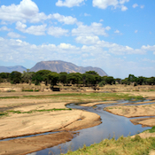
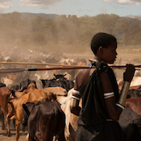

A new Conservation Model
Bridging the Gap
 Through the use of state of the art motion-sensing cameras like this one, we can give onlive visitors a unique and facinating view into the intricate life of an African park.
Through the use of state of the art motion-sensing cameras like this one, we can give onlive visitors a unique and facinating view into the intricate life of an African park.
Although traditional tourism plays a vital role in conserving Africa's wild places, many parks are either too far off the beaten path, or lack the infrastructure to support their conservation work through tourism.
By connecting you and other online visitors with dedicated conservation organizations, we can bridge this gap and give parks a chance for a brighter future.
Ruaha National Park
Our Digital Reserve is located in and around Ruaha National Park in central Tanzania.
Ruaha is the second largest park in all of Africa and protects 20,000 sq km of vital habitat for many creatures including the world's second largest population of Lions.
Despite it's beautiful landscapes and abundant wildlife, Ruaha recieves few visitors and maintaining conservation funding is a constant challenge.
The landscape and wildlife are under constant threat from poaching and from conflict with surrounding communities.
Making a Difference
When you sponsor a camera, you donation makes a real and lasting difference in preserving the amazing Ruaha landscape.
Our conservation efforts focus on three vital areas:
Reducing ConflictMany local communities depend upon livestock for survival. When predators like lions, leopard or wild-dogs kill livestock, it can lead to retaliation by local people. We utalize a number of methods to reduce conflict including helping with the construction of better fencing, training guard dogs, and paying reperations for lost livestock.
ResearchUnderstanding wildlife populationa and distributions within the park is vital both for effective conservation work and to track the sucsess of our progect. We use both wildlife cameras and field observations to collect data on wildlife population in and around the park.
EducationUltimately, wild areas like Ruaha National Park do not have a future without the support of local communities. In addition to reducing human/wildlife consflicts we also help local schools and other groups visit the park and experince the wildlife in positive ways.